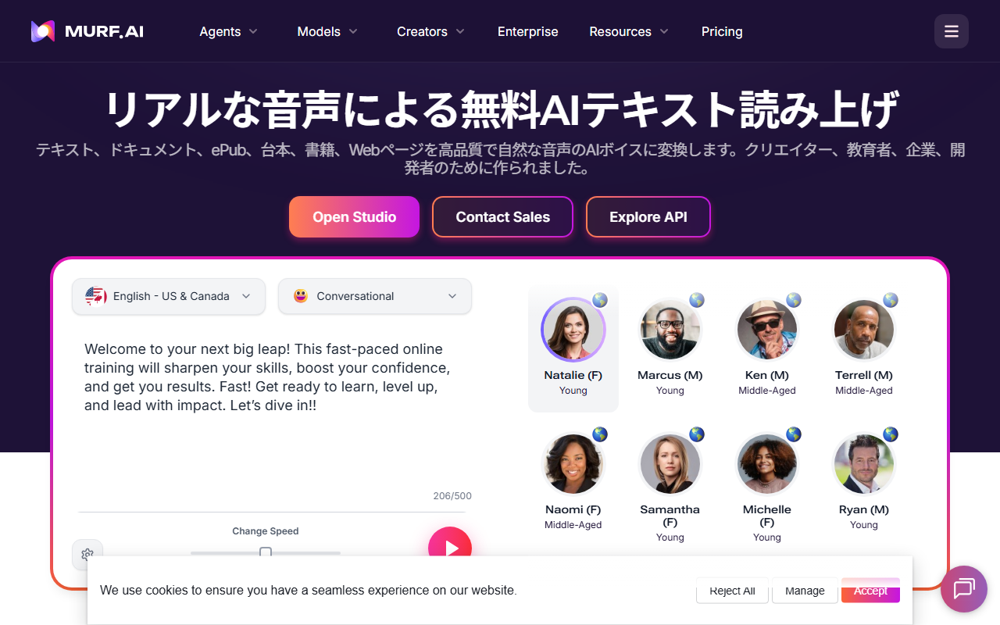
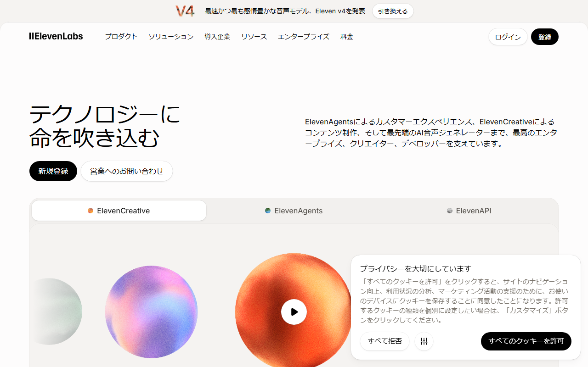

Murf AIは日本語で使える？音声・UI・無料枠とCanva連携を解説
Murf AIは、入力した原稿から動画や教材用のナレーションを作るAI音声ツールです。原稿と音声は日本語に対応しています。一方、Studioの画面と有人サポートの日本語対応は、公式情報に明記されていません。
日本語音声や無料枠に加え、Canva連携と日本からの支払いも解説します。
Murf AIの日本語対応状況（音声・UI・サポート・無料枠）
- 日本語音声：40種類超
- Studioの日本語UI：公式手順なし
- 日本語サポート：対応言語の記載なし
- 無料枠：生成10分、ダウンロード不可
- Canva連携：追加はMurf有料プラン
- おすすめ：日本語音声とCanva連携を試すならMurf AI
日本語音声の種類やサービスの特徴を日本語で読めます。
日本語音声は40種類超から選べる

ページの説明は日本語です。上部メニューと音声デモの選択欄は、英語で表示されています。
Murfの公式日本語TTSページでは、40種類を超える日本語AI音声が案内されています。音声スタイルはFormal／Conversational／Announcerの3系統です。
選べる声やスタイルは、StudioとAPIで同じとは限りません。登録後は、制作画面に表示される選択肢を見てください。
固有名詞・難読語・数字は短い原稿で試す
最初に、自社名や商品名、人名を含む短い原稿を用意します。年月日・金額・型番も、読み間違いが起きやすい項目です。
同じ文を複数の声で再生すると、原稿に合う声を絞れます。読みが不自然な語は、ひらがなに直すか、句読点を加えて調整してください。
英字が混ざる文と長い台詞は分ける
英語の商品名を含む文・長文・会話調の台詞は、別々に再生します。MurfのAPI文書には、日本語音声の例としてDenki／Kenji／Kimiが掲載されています。
KimiにはConversationalスタイルの記載があります。API文書の例だけでは、Studioで選べる音声の全体像は分かりません。
速度・ピッチ・間を調整できる
Studioでは、速度とピッチを変えられます。句読点を加えれば、文中の間も変えられます。
音声の自然さは、声の種類と原稿によって変わります。契約前に普段使う原稿を入れ、発音や文末の調子を聞き比べてください。
音声サンプルを再生し、日本語の声を聞き比べられます。
Murf Studioの画面は日本語化できる？
Murfには日本語の公式ページがあります。一方、Murf Studioを日本語表示へ切り替える公式手順は確認できません。
日本語ページと制作画面は別に考える
公式の日本語ページでは、サービスの特徴や日本語音声の案内を読めます。制作画面のMurf Studioでは、原稿を入力して音声を選びます。
案内ページが日本語でも、ログイン後の画面まで日本語になるとは限りません。契約前にFree Trialで画面を開き、英語のメニューで制作できるか確かめてください。
ブラウザ翻訳は公式の日本語UIではない
ブラウザの翻訳機能は使えますが、Murfが提供する日本語UIではありません。
動的なメニューやエラー表示が正確に訳される保証もありません。サポートへ問い合わせる可能性がある場合は、設定名の英語表記も控えておきましょう。
無料枠は生成10分まで、音声はダウンロードできない
Free Trialはカード不要で、300種類を超える音声と33言語に対応しています。無料枠には、音声生成10分と文字起こし10分が含まれます。
日本語原稿の読み方・速度・ピッチ・間は無料で試せます。完成した音声をダウンロードするには、有料プランが必要です。
有料プランは月間の生成時間で選ぶ
- Creator：$29/月、または年払いで$19/月相当
- Creatorの生成枠：2時間/月、または24時間/年
- Business：$99/月、または年払いで$66/月相当
- Businessの生成枠：8時間/月、または96時間/年
1ドル=158円で換算すると、Creatorは約4,582円/月です。年払いなら約3,002円/月相当。円換算額は為替で変わります。
商用制作では利用権も見る
Creatorにはcommercial rights、Businessにはbusiness licenseが含まれます。広告・教材・受託制作に使う場合は、生成時間と契約プランの権利条件を見てください。
日本語音声の無料サンプルを聞き、そのままStudioへ進めます。
Canvaで日本語ナレーションを追加する手順
Canvaでは、Murf AIアプリを開いてMurfアカウントを接続します。Canvaの表示言語とMurf Studioの表示言語は連動しません。
Canvaのアプリ一覧からMurf AIを開く
音声を加えたいデザインを開き、アプリ一覧からMurf AIを選びます。CanvaとMurfの公式手順は、デスクトップでの操作を案内しています。
日本語の音声を選んで原稿を入れる
Murfアカウントへサインインし、言語を日本語に設定します。声を選んだ後は、スタイル・速度・ピッチを調整できます。
1ブロックは1,000文字までで、ブロック数は最大50です。固有名詞や数字をプレビューで聞き、必要に応じて表記や句読点を直します。
Canvaへの追加にはMurfの有料プランが必要
Free Trialで使えるのは、Canva内でのプレビューと試聴までです。作成した音声をデザインへ追加するには、Murfの有料プランが必要です。
Canva公式は、Murf.AI Proで選べる音声が増えると案内していますが、Canva Proを必須条件とはしていません。商用利用には、Murf側で契約したプランの権利条件が適用されます。
Canvaへ追加する前に、日本語音声の候補を公式ページで探せます。
日本語サポート・請求書・日本からの支払い
Murfには、24時間365日利用できるchat・email窓口があります。公式サイトには、日本語で回答するとの記載がなく、Help Centerも英語です。
日本語での対応が欠かせないなら、契約前に窓口へ問い合わせておきましょう。
JCBを含むカードで支払える
全プランでクレジットカードとデビットカードに対応しています。対応ブランドは次のとおりです。
- AmEx
- CUP
- Discover／Diners
- eftpos
- JCB
- Mastercard
- Visa
PayPalには対応していません。invoice／wire／bank transferを使えるのはEnterpriseのみです。
請求書は設定画面からダウンロードできる
購入時は、請求先メールアドレスへinvoiceまたはreceiptが届きます。Workspace SettingsのInvoicesからPDFを取得する方法もあります。
請求先・会社住所・tax registration numberをStripe portalで更新すると、次回以降のinvoiceに反映されます。日本の適格請求書として扱えるかは、税理士に確認してください。
解約後は現在の契約期間まで使える
Workspace SettingsのSubscriptionからCancel Planへ進むと、契約は現在の期間末で終了します。既払いは原則として返金されません。
例外は、購入から24時間以内で、音声生成が10分未満の場合です。この条件を満たす場合は、supportへ返金を申請してください。
サービス案内を日本語で読んだ後、そのままStudioの登録画面へ進めます。
日本語UIを重視するならElevenLabsも候補
英語の画面や無料枠が合わなければ、ElevenLabsも比較候補になります。音声の質は、同じ原稿を使って聞き比べると判断しやすくなります。

公式サイトは日本語で表示され、料金・登録・問い合わせの入口も日本語です。
Murf AIが向いている人
40種類を超える日本語AI音声をカードなしで試したい人には、Murf AIが向きます。Canvaのデザインへ音声を加えたい人にも合います。
音声のダウンロードとCanvaへの追加は、無料枠の対象外です。試聴した後、有料プランを契約する前提で比べてください。
ElevenLabsの無料枠と日本語対応
ElevenLabsの公式サイト・料金ページ・ヘルプの一部は日本語です。日本法人も設立済み。Freeは月10,000クレジットで、Studioプロジェクトは3件までです。無料枠に商用ライセンスはありません。
ログイン後の生成画面を日本語化する方法は、公式には案内されていません。メール・チャットの日本語窓口も確認できません。
製品ページは日本語で、機能・料金・無料登録へのリンクがまとまっています。
Murf AIの日本語対応でよくある質問
Murf AIに日本語の音声はありますか？
はい。公式日本語TTSページでは、40種類を超える日本語AI音声が案内されています。固有名詞や英語を含む文は、Free Trialで試聴できます。
Murf Studioは日本語表示に対応していますか？
公式日本語ページはありますが、Studioを日本語表示へ切り替える手順は公式文書では確認できません。
日本語音声のダウンロードは無料ですか？
できません。Free Trialでは音声生成10分を試せますが、ダウンロードには有料プランが必要です。
Canva ProなしでもMurf AIを使えますか？
Canva Proが必須との公式記載はなく、MurfのFree Trialで使えるのはプレビューと試聴までです。デザインへの追加にはMurfの有料プランが必要です。
日本語で問い合わせられますか？
chat・email窓口はありますが、日本語で回答されるとの公式記載はありません。Help Centerは英語です。
まとめ：日本語音声は無料で試せるが保存は有料
日本語音声はカードなしで試聴できますが、無料枠ではダウンロードできません。Canvaのデザインへ音声を追加する場合も、Murfの有料プランが必要です。
Studioの日本語表示と日本語の有人サポートは、公式情報に明記されていません。日本語対応が必須なら、契約前にFree Trialの画面を開き、窓口にも問い合わせてください。
音声をダウンロードするなら、月間の生成時間でCreatorとBusinessを比べましょう。公式ページの日本語対応を重視する場合は、ElevenLabsも候補に加えましょう。
日本語音声を聞いてから、無料でStudioを始められます。